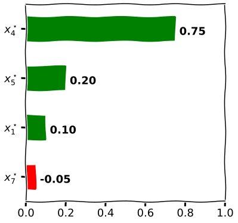
Surrogate Explainers
(bLIMEy)
Kacper Sokol
Method Overview
Explanation Synopsis
Surrogate explainers construct an inherently interpretable model in a desired – local, cohort or global – subspace to approximate a more complex, black-box decision boundary (Sokol et al. 2019).
Explanation Synopsis
By using different surrogate models we can generate a wide array of explanation types; e.g., counterfactuals with decision trees (van der Waa et al. 2018; Sokol and Flach 2020) and feature influence with linear classifiers (Ribeiro, Singh, and Guestrin 2016).
Explanation Synopsis
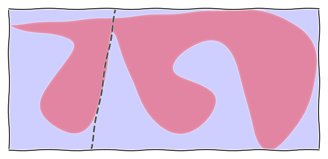Explanation Synopsis
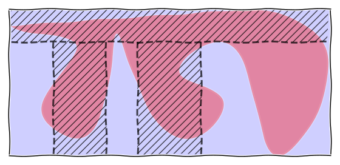Explanation Synopsis
Interpretation of the Toy Example
- The intuition communicated by the toy example may be misleading when dealing with real-life surrogates, which often use an interpretable representation
- (Interpretable representations transform raw features into human-intelligible concepts)
- In this case surrogates do not directly approximate the behaviour of the underlying black box
- Instead, they capture its behaviour through the prism of concepts encoded by the interpretable representation
Toy Example – Tabular Data (LIME-like Linear Surrogate)
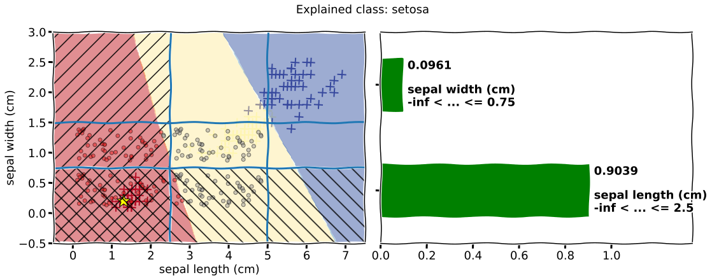Toy Example – Image Data (LIME-like Linear Surrogate)
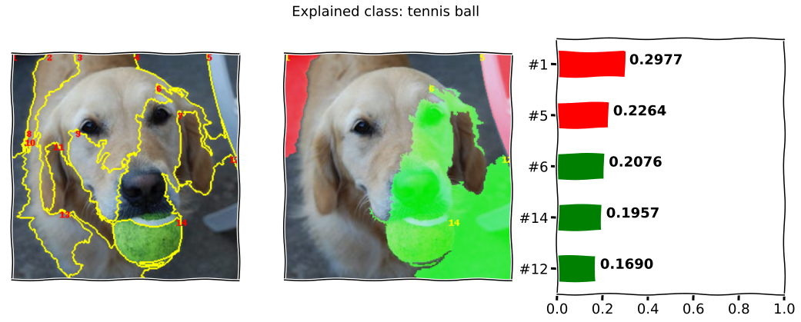Toy Example – Text Data (LIME-like Linear Surrogate)
\(x^\star_0\): This
\(x^\star_1\): sentence
\(x^\star_2\): has
\(x^\star_3\): a
\(x^\star_4\): positive
\(x^\star_5\): sentiment
\(x^\star_6\): ,
\(x^\star_7\): maybe
\(x^\star_8\): .
Method Properties
| Property | Surrogate Explainers |
|---|---|
| relation | post-hoc |
| compatibility | model-agnostic ([semi-]supervised) |
| modelling | regression, crisp and probabilistic classification |
| scope | local, cohort, global |
| target | prediction, sub-space, model |
Method Properties
| Property | Surrogate Explainers |
|---|---|
| data | text, image, tabular |
| features | numerical and categorical (tabular data) |
| explanation | type depends on the surrogate model |
| caveats | random sampling, explanation faithfulness & fidelity |
(Algorithmic) Building Blocks
Surrogate Components
Interpretable Representation
Data Sampling
Explanation Generation
Surrogate Components: Interpretable Representation
If desired, data are transformed from their original domain into a human-intelligible representation, which is used to communicate the explanations. This step is required for image and text data, but optional – albeit helpful – for tabular data.
Surrogate Components: Interpretable Representation
Interpretable representations tend to be binary spaces encoding presence (fact denoted by \(1\)) or absence (foil denoted by \(0\)) of certain human-understandable concepts generated for a data point selected to be expalined.
Operationalisation of Interpretable Representations
Specifying the foil of an interpretable representation – i.e., the operation linked to switching off a component of the IR by setting its binary value to \(0\) – may not always be straightforward, practical or even (computationally) feasible in certain domains, requiring a problem-specific information removal proxy.
Surrogate Components: Interpretable Representation
Tabular
Discretisation of continuous features followed by binarisation.
Image
Super-pixel segmentation.
Text
Tokenisation such as bag-of-words representation.
Surrogate Components: Interpretable Representation
Text
\(x^\star_0\): This
\(x^\star_1\): sentence
\(x^\star_2\): has
\(x^\star_3\): a
\(x^\star_4\): positive
\(x^\star_5\): sentiment
\(x^\star_6\): ,
\(x^\star_7\): maybe
\(x^\star_8\): .
\[ x^\star = [1, 1, 1, 1, 1, 1, 1, 1, 1] \]
Surrogate Components: Interpretable Representation
Text
\[ x^\star = [1, 0, 0, 1, 0, 0, 1, 0, 1] \]
\(x^\star_0\): This
\(x^\star_1\):
\(x^\star_2\):
\(x^\star_3\): a
\(x^\star_4\):
\(x^\star_5\):
\(x^\star_6\): ,
\(x^\star_7\):
\(x^\star_8\): .
Surrogate Components: Interpretable Representation
Text
This
\(x^\star_0\): sentence
has
a
\(x^\star_1\): positive
\(x^\star_1\): sentiment
,
\(x^\star_2\): maybe
.
\[ x^\star = [1, 1, 1] \]
Surrogate Components: Interpretable Representation
Image
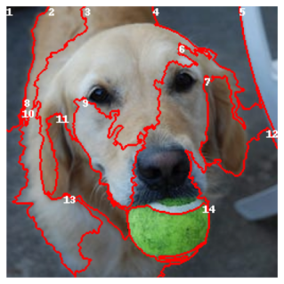
\[ x^\star = [1, 1, 1, 1, 1, 1, 1, 1, 1, 1, 1, 1, 1, 1] \]
Surrogate Components: Interpretable Representation
Image
\[ x^\star = [1, 0, 1, 1, 0, 1, 0, 1, 0, 1, 1, 0, 1, 1] \]
Surrogate Components: Interpretable Representation
Image
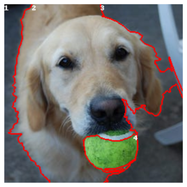
\[ x^\star = [1, 1, 1, 1] \]
Surrogate Components: Interpretable Representation
Image
\[ x^\star = [1, 1, 1] \]
Surrogate Components: Interpretable Representation
Tabular
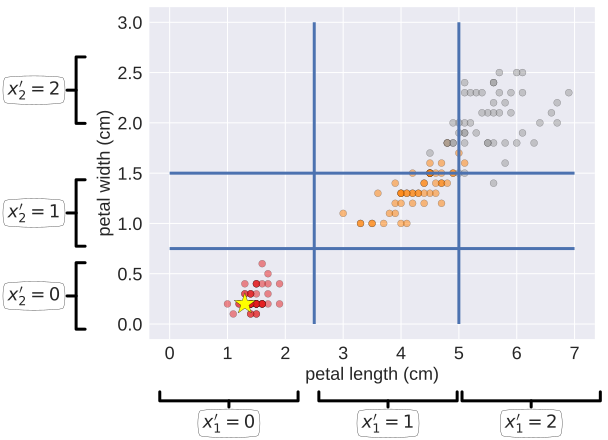
\[ x = [1.3, 0.2] \]
\[ x^\prime = [0, 0] \]
Surrogate Components: Interpretable Representation
Tabular
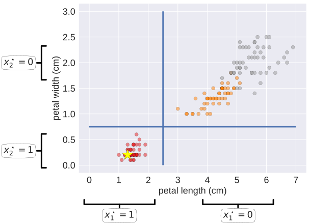
\[ x^\star = [1, 1] \]
Surrogate Components: Interpretable Representation
Tabular
\[ x^\star = [1, 0] \]
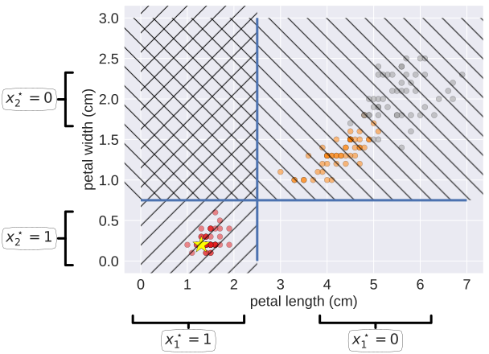
Surrogate Components: Interpretable Representation
Tabular
\[ x^\star = [1, 0] \;\;\;\; \longrightarrow \;\;\;\; x = [?, ?] \]
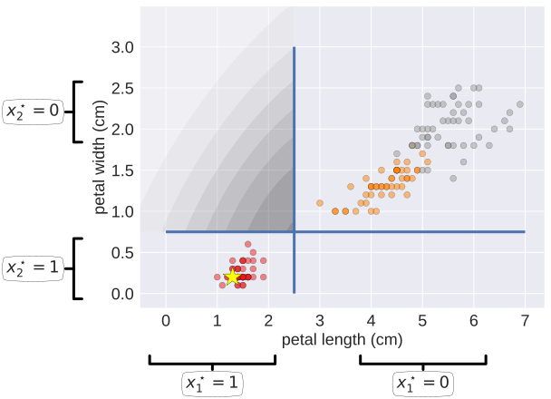
Surrogate Components: Data Sampling
Data sampling allows to capture the behaviour of a predictive model in a desired subspace. To this end, a data sample is generated and predicted by the explained model, offering a granular insight into its decision surface.
Surrogate Components: Data Sampling
Original Domain
- Tabular data
Interpretable Representation
- Tabular data (implicitly global)
- Image data (implicitly local)
- Text data (implicitly local)
Surrogate Components: Data Sampling
Tabular
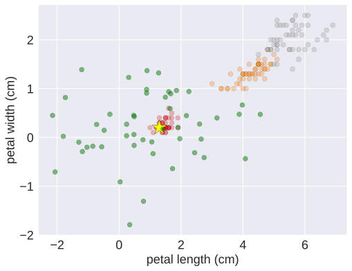Surrogate Components: Data Sampling
Tabular
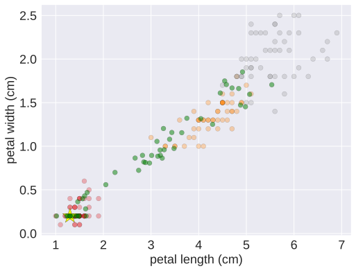Surrogate Components: Explanation Generation
Explanatory insights are extracted from an inherently transparent model fitted to the sampled data (in interpretable representation), using their black-box predictions as the target.
Surrogate Components: Explanation Generation
Additional processing steps can be applied to tune and tweak the surrogate model, hence the explanation. For example, the sample can be weighted based on its proximity to the explained instance when dealing with local explanations; and a feature selection procedure may be used to introduce sparsity, therefore improve accessibility and comprehensibility of explanatory insights.
Surrogate Components: Explanation Generation
Sample Weighting
Data Domain
- Original domain
- (Intermediate) discrete domain (tabular data only)
- Binary interpretable representation
Distance Metric
- Hamming:
\(L(a, b) = \frac{1}{N} \sum_{i = 1}^{N} \mathbb{1} (a_i \neq b_i)\) - Euclidean:
\(L(a, b) = \sqrt{\sum_{i = 1}^{N} (b_i - a_i)^2}\) - Cosine:
\(L(a, b) = \frac{a \cdot b}{ \sqrt{a \cdot a} \sqrt{b \cdot b}}\)
Kernel
- Exponential:
\(k(d) = \sqrt{exp\left(-\frac{d^2}{w^2}\right)}\)
Surrogate Components: Explanation Generation
Sample Weighting
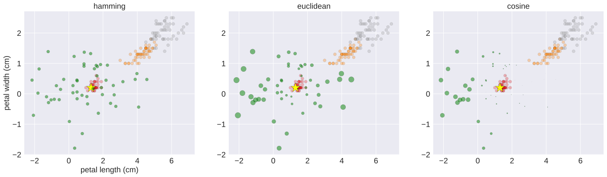Surrogate Components: Explanation Generation
Sample Weighting
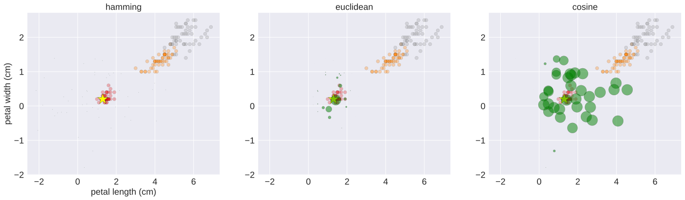Surrogate Components: Explanation Generation
Target Type
Crisp Classification
- Explicit one-vs-rest:
\(A\) and \(\neg A\)
Probabilistic Classification
- Implicit one-vs-rest:
\(\mathbb{P}(A)\) and \(1 - \mathbb{P}(A) = \mathbb{P}(\neg A)\)
Regression
- Numerical output:
\(f(x)\)
Surrogate Components: Explanation Generation
Modelling Multiple Classes
Single Target
Independent surrogate models explaining one class at a time:
- \(\mathbb{P}(A)\) and \(\mathbb{P}(\neg A)\)
- \(\mathbb{P}(B)\) and \(\mathbb{P}(\neg B)\)
- etc.
Multiple Targets
A single model explaining a selected subset of classes:
- \(\mathbb{P}(A)\)
- \(\mathbb{P}(B)\)
- \(\mathbb{P}(C)\)
- \(\mathbb{P}\left(\neg (A \lor B \lor C)\right)\)
Surrogate Components: Explanation Generation
Surrogate Model Type
- Lienar
- Tree-based
- Rule-based
- etc.
Computing Surrogates
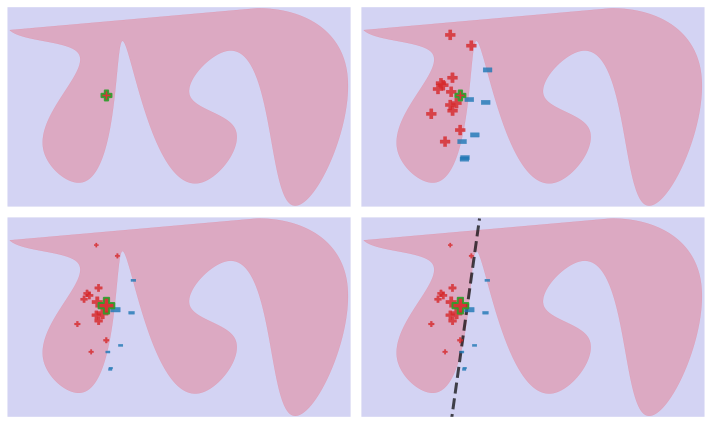Computing Surrogates
Input
Select an instance to be explained (local surrogate)
Select the explanation target
- crisp classifiers → one-vs-rest or a subset of classes-vs-rest
- probabilistic classifiers → (probabilities of) one or multiple classes
- regressors → numerical values
Computing Surrogates
Parameters
- Define the interpretable representation
- text → pre-processing and tokenisation
- image → occlusion proxy, e.g., segmentation granularity and occlusion colour
- tabular → discretisation of numerical features and grouping of categorical attributes
Computing Surrogates
Parameters
- Specify sampling strategy
- original domain (tabular data) → number of instances and sampling objective (scope and target)
- transformed domain (all data domains) → completeness of the sample
- Sample weighting → data domain, distance metric, kernel type
- Feature selection (tabular data) – feature selection strategy
- Type of the surrogate model and its parameterisation
Computing Surrogates
Procedure
- Transform the explained instance into the interpretable representation
- Sample data around the explained instance with a given scope
- Predict the sampled data using the black box (transform into the original representation if sampled in the interpretable domain)
Computing Surrogates
Procedure
- Calculate similarities between the explained instance and sampled data by kernelising distances
- Optionally, reduce dimensionality of the interpretable domain
- Fit a surrogate model to the (subset of) interpretable feature and black-box predictions of the desired target(s)
- Extract the desired explanation from the surrogate model
Theoretical Underpinning
\[ \def\IR{\mathit{IR}} \def\argmin{\mathop{\operatorname{arg\,min}}\limits} \def\argmax{\mathop{\operatorname{arg\,max}}\limits} \]
Formulation: Optimisation Objective
\[ \mathcal{O}(\mathcal{G}; \; f) = \argmin_{g \in \mathcal{G}} \overbrace{\Omega(g)}^{\text{complexity}} \; + \;\;\; \overbrace{\mathcal{L}(f, g)}^{\text{fidelity loss}} \]
Formulation: Complexity
\[ \Omega(g) = \frac{\sum_{\theta \in \Theta_g} {\Large\mathbb{1}} \left(\theta\right)}{|\Theta_g|} \]
\[ \Omega(g; \; d) = \frac{\text{depth}(g)}{d} \;\;\;\;\text{or}\;\;\;\; \Omega(g; \; d) = \frac{\text{width}(g)}{2^d} \]
Formulation: Numerical Fidelity (One Class)
\[ \mathcal{L}(f, g ; \; \mathring{x}, X^\prime, \mathring{c}) = \sum_{x^\prime \in X^\prime} \; \underbrace{\omega\left( \IR(\mathring{x}), x^\prime \right)}_{\text{weighting factor}} \; \times \; \underbrace{\left(f_\mathring{c}\left(\IR^{-1}(x^\prime)\right) - g(x^\prime)\right)^{2}}_{\text{individual loss}} \]
\[ \omega\left(\IR(\mathring{x}), x^\prime \right) = k\left(L\left(\IR(\mathring{x}), x^\prime\right)\right) \]
\[ \omega\left( \mathring{x}, x \right) = k\left(L\left(\mathring{x}, x\right)\right) \]
Formulation: Crisp Classification Fidelity (One Class)
\[ \mathcal{L}(f, g ; \; \mathring{x}, X^\prime, \mathring{c}) = \sum_{x^\prime \in X^\prime} \; \omega\left( \IR(\mathring{x}), x^\prime \right) \; \times \; \underline{ {\Large\mathbb{1}} \left(f_\mathring{c}\left(\IR^{-1}(x^\prime)\right), \; g(x^\prime)\right)} \]
\[ \begin{split} f_{\mathring{c}}(x) = \begin{cases} 1, & \text{if} \;\; f(x) \equiv \mathring{c}\\ 0, & \text{if} \;\; f(x) \not\equiv \mathring{c} \end{cases} \text{ .} \end{split} \]
\[ \begin{split} {\Large\mathbb{1}}\left(f_{\mathring{c}}(x), g(x^\prime)\right) = \begin{cases} 1, & \text{if} \;\; f_{\mathring{c}}(x) \equiv g(x^\prime)\\ 0, & \text{if} \;\; f_{\mathring{c}}(x) \not\equiv g(x^\prime) \end{cases} \text{ ,} \end{split} \]
Formulation: Crisp Classification Fidelity (One Class)
| \(f(x)\) | \(f_\beta(x)\) | \(g(x^\prime)\) | \({\Large\mathbb{1}}\) |
|---|---|---|---|
| \(\alpha\) | \(0\) | \(1\) | \(0\) |
| \(\beta\) | \(1\) | \(0\) | \(0\) |
| \(\gamma\) | \(0\) | \(0\) | \(1\) |
| \(\beta\) | \(1\) | \(1\) | \(1\) |
| \(\alpha\) | \(0\) | \(0\) | \(1\) |
Formulation: Crisp Classification Fidelity (Multiple Class)
\[ \mathcal{L}(f, g ; \; \mathring{x}, X^\prime, \mathring{C}) = \sum_{x^\prime \in X^\prime} %\left( \omega( \IR(\mathring{x}) , x^\prime ) \; \times \; \underline{ \frac{1}{|\mathring{C}|} \sum_{\mathring{c} \in \mathring{C}} {\Large\mathbb{1}} \left( f_\mathring{c}\left(\IR^{-1}(x^\prime)\right), \; g_\mathring{c}(x^\prime) \right) } %\right) \]
Formulation: Numerical Fidelity (Multiple Class)
\[ \mathcal{L}(f, g ; \; \mathring{x}, X^\prime, \mathring{C}) = \sum_{x^\prime \in X^\prime} %\left( \omega( \IR(\mathring{x}) , x^\prime ) \; \times \; \underline{ \frac{1}{2} \sum_{\mathring{c} \in \mathring{C}} \left( f_\mathring{c}\left(\IR^{-1}(x^\prime)\right) - g_\mathring{c}(x^\prime) \right)^2 } %\right) \]
Variants
As many as you wish to construct.
Evaluation
Fidelity-based
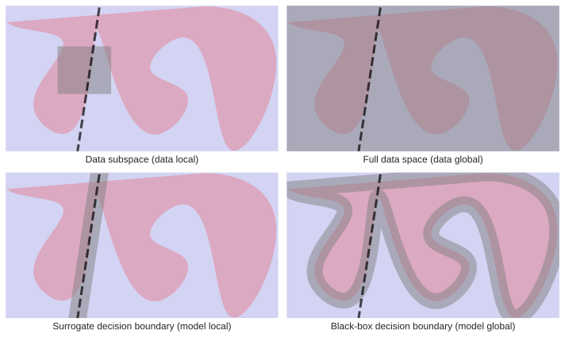Tabular Data: Interpretable Representation
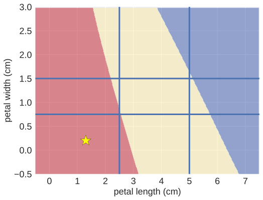Tabular Data: Sampling
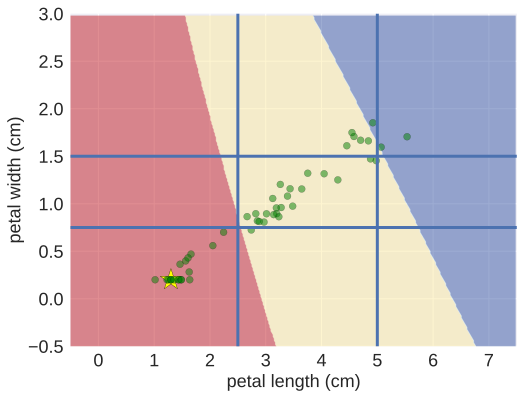Examples
One-class Linear Surrogate
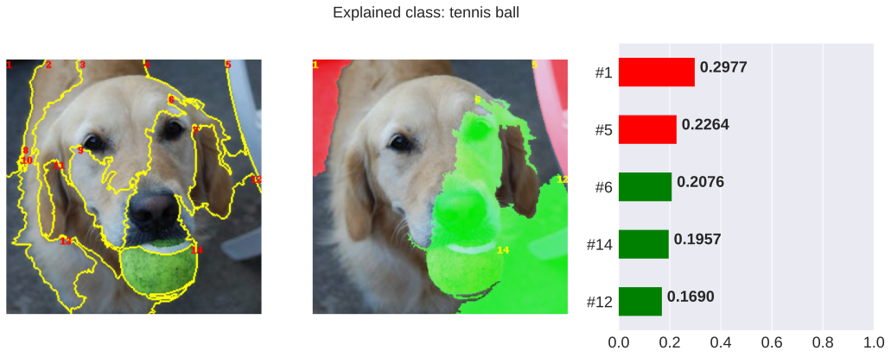One-class Linear Surrogate
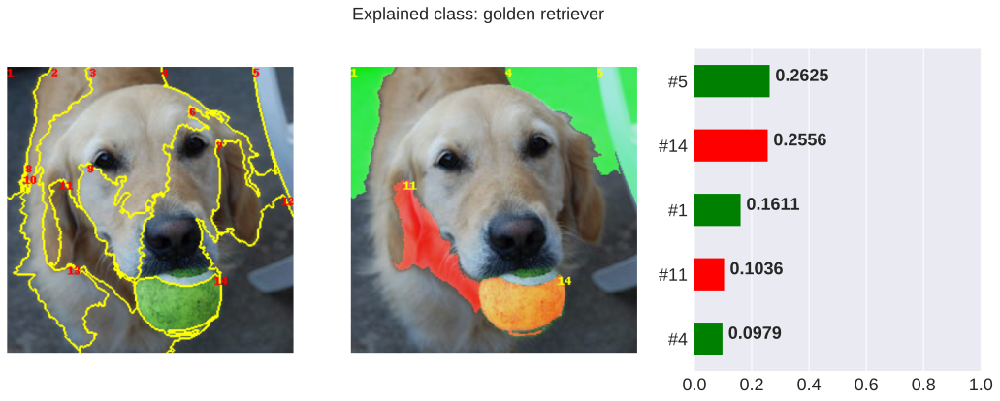One-class Linear Surrogate
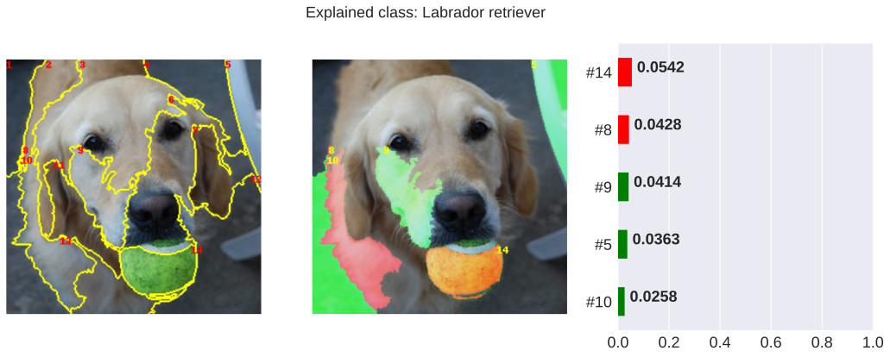Multi-class Tree Surrogate

Case Studies & Gotchas!
Image Data: Segmentation Size & Occlusion Colour
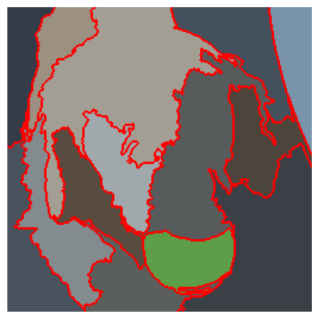
Image Data: Segmentation Size & Occlusion Colour


Image Data: Segmentation Size & Occlusion Colour
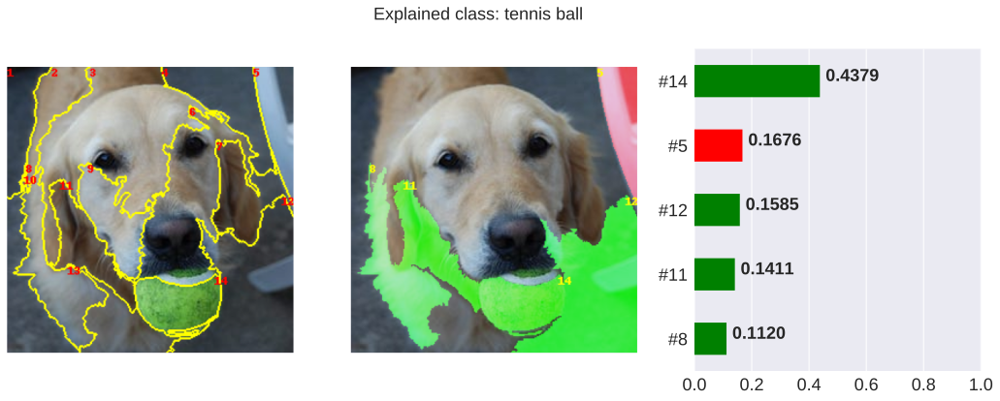Image Data: Segmentation Size & Occlusion Colour
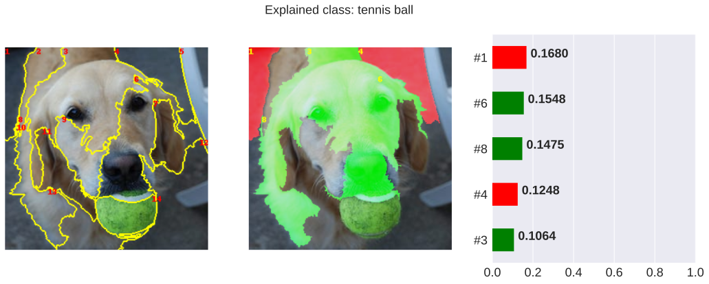Tabular Data: Incompatibility of Binarisation and Linear Models

Tabular Data: Incompatibility of Binarisation and Linear Models

Properties
Pros
- A universal inspection mechanism for various subspaces of an arbitrary black-box algorithmic decision process
- Highly customisable
- A single explanatory procedure for image, text and tabular data
- Produces diverse explanation types depending on the utilised surrogate model
- Outputs intuitive explanations for image and text data due to the use of interpretable representations
Cons
- Inadequate for high-stakes algorithmic decisions because of lacklustre fidelity
- Explanations may be counterintuitive and misleading for a lay audience when applied to tabular data with an interpretable representation
Caveats
- While post-hoc, model-agnostic and data-universal, they must not be treated as a silver bullet
- Their characteristics allow a single instantiation of a surrogate explainer to be applied to diverse problems, however the quality of the resulting explanations will vary across different problems and data sets
- Building them requires an effort since each explainer should be tweaked and tuned to the problem at hand
Further Considerations
Related Techniques
- LIME (Ribeiro, Singh, and Guestrin 2016)
- LIMEtree (Sokol and Flach 2020)
- RuleFit (Friedman and Popescu 2008)
Implementations
| Python | R |
|---|---|
| LIME | lime |
| interpret | iml |
| Skater | |
| AIX360 |
Further Reading
Bibliography
Friedman, Jerome H, and Bogdan E Popescu. 2008. “Predictive Learning via Rule Ensembles.” The Annals of Applied Statistics, 916–54.
Ribeiro, Marco Tulio, Sameer Singh, and Carlos Guestrin. 2016. “‘Why Should I Trust You?’: Explaining the Predictions of Any Classifier.” In Proceedings of the 22nd ACM SIGKDD International Conference on Knowledge Discovery and Data Mining, San Francisco, CA, USA, August 13–17, 2016, 1135–44.
Sokol, Kacper, and Peter Flach. 2020. “LIMEtree: Consistent and Faithful Surrogate Explanations of Multiple Classes.” arXiv Preprint arXiv:2005.01427.
Sokol, Kacper, Alexander Hepburn, Raul Santos-Rodriguez, and Peter Flach. 2019. “bLIMEy: Surrogate Prediction Explanations Beyond LIME.” 2019 Workshop on Human-Centric Machine Learning (HCML 2019) at the 33rd Conference on Neural Information Processing Systems (NeurIPS 2019), Vancouver, Canada.
van der Waa, Jasper, Marcel Robeer, Jurriaan van Diggelen, Matthieu Brinkhuis, and Mark Neerincx. 2018. “Contrastive Explanations with Local Foil Trees.” Workshop on Human Interpretability in Machine Learning (WHI 2018) at the 35th International Conference on Machine Learning (ICML 2018), Stockholm, Sweden.